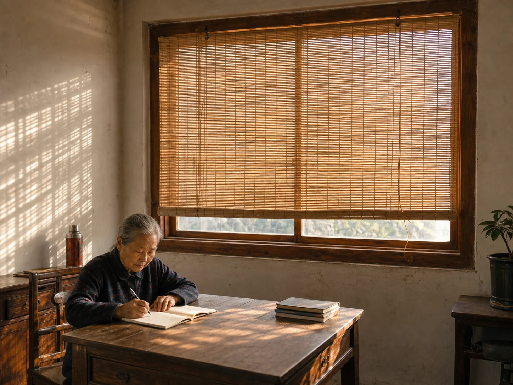

The Reed Blind Across the Western Window
When afternoon sun reached the western window, my grandfather lowered the reed blind so the family could keep using the room until evening.

Sunlight reaching the western window
The reed blind remained rolled above the window through the morning. After lunch, I watched a bright rectangle climb from the floor to the table, then touch the cabinet where my grandfather kept the radio. Dust showed briefly in the light above the radio's thin metal aerial. That was when he reached for the hanging cord.
The blind came down with a dry run of reeds against wood. He stopped it just above the sill, leaving a narrow opening where air and street sounds could pass. The cord swung against the frame until he caught it with one hand. Fine bands of light crossed the wall, the notebook, and the teacup without closing the room.
The room kept in use
The blind was not lowered for a midday sleep. My grandmother continued writing at the table, I sorted papers beside her, and the radio played from the cabinet. As the sun moved, the striped patch traveled from the wall to the tabletop and thinned near the door.
The bamboo wife placed open weaving beside the body on a summer bed, while the reed blind stayed at the window and changed the light across a shared room. The mint cloth moved between basin, hand, and face; the blind remained overhead so reading, writing, and conversation could continue below it.
Raised after the wall cooled
Near evening, the bright lines faded from the plaster before the outdoor air changed. A pale grid remained for a few minutes above the cabinet. My grandfather touched the wall beside the window, looked at the courtyard, and loosened the cord. The reeds clicked together as the lower edge began to rise.
I gathered the papers while he rolled the blind to the top of the frame. He looped the cord twice around the wooden peg, opened the window wider, and set his teacup back on its dry ring.